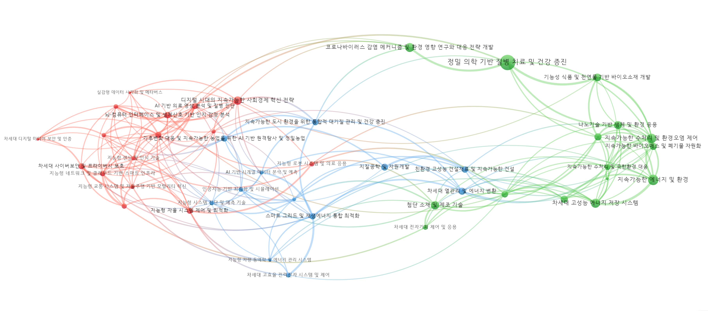

8 2.1 Macro & Emerging Areas / 표준연구 지형도
Module 1 focuses on constructing a research landscape for standard science and extracting emerging domains worth strategic investment.
8.1 세부 목차 / Section Outline
- 연구지형도 구축 (Macro 레벨)
- 유망연구영역 도출 (Meso/Micro 연결)
- Analyst 체크포인트
8.2 2.1.1 연구지형도 구축 / Landscape Construction
- Corpus Expansion: Incorporate curated keywords, flagship journals, and citation links to avoid blind spots.
- 클러스터링: Apply Leiden algorithm on citation graphs to derive coherent research areas.
- Global ↔︎ Domain Views: Build a global overlay map first, then filter to standard-research clusters to preserve context.
- LLM 보조 설명: Generate bilingual descriptions for each cluster to support analyst briefings.
8.3 2.1.2 유망연구영역 도출 / Emerging Area Detection
- 지표 묶음: Growth, diffusion (파급성), influence, industrial linkage, novelty.
- Scoring Mechanics: Combine c‑TF‑IDF/LLR keyword signals with bibliometric metrics to prioritise.
- LLM 리포팅: Produce quick memos summarising why each area matters, including exemplar keywords, institutions, and potential applications.
- Synthesis Artifacts:
- Ranked tables by indicator weights.
- Heatmaps comparing emerging vs. mature domains.
- Narrative briefing decks for leadership reviews.
8.4 2.1.3 Analyst Actions / 분석자 체크포인트
- Validate cluster coherence before trusting indicator outputs.
- Compare emerging-area lists with KRISS strategic themes; mark overlaps and gaps.
- Archive LLM prompts/responses to ensure auditability and reproducibility.
8.5 2.1.4 KRISS 표준연구 맵 (업데이트 필요)
- 최신 표준연 코퍼스로 Meso 맵을 새로 계산해 삽입한다.
- 데이터: 표준연 연구 코퍼스(제목·초록·인용), 클러스터 라벨, 연도별 문헌수.
- 단계: (1) 인용 기반 코사인 유사도 계산 → (2) Leiden 군집화 → (3) Meso 명명 → (4) 맵 시각화.
- 규칙: 노드 크기=문헌수, 링크는 상위 200개 정도로 제한, Macro 색상은 KRISS 정의에 맞게 재지정.
- 출력 위치 제안:
docs/assets/maps/kriss_meso_map.png(정적), 필요시 iframe(예:pyvis, VOSviewer JSON). - 현재 이미지는 레거시 예시이며, 표준연 데이터로 교체해야 한다.
참고: 4PN 레거시 맵 (예시)
- 아래 맵은 과거 4PN 데이터북의 예시이며, 표준연 분석 결과가 아님. 교체 전까지는 내부 참고용으로만 사용.

8.6 2.1.5 Macro 설명 템플릿 (KRISS 버전 작성 필요)
- Macro A: (예시) 계측·센서/측정 표준 영역 — 핵심 세부영역, 대표 기술/키워드, 주요 기관·적용 분야.
- Macro B: (예시) 소재·공정·장비 표준화 — 핵심 세부영역, 대표 기술/키워드, 주요 기관·적용 분야.
- Macro C: (예시) 에너지/환경/안전 연계 표준 — 핵심 세부영역, 대표 기술/키워드, 주요 기관·적용 분야.
- 위 템플릿을 최신 KRISS Macro 정의에 맞게 교체하고, 각 Meso와 연계하여 서술한다.